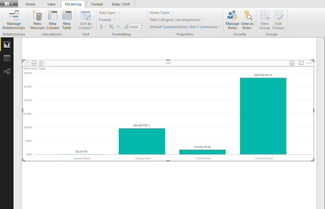

Power-BI in Dynamics 365
Using the CRM Connection URL Before you begin, find your CRM connection URL
1. Log-in to your CRM instance, and go to Settings
2. Click Developer Resources
3. At the bottom of thepage, there is an Organization Data Service URL. This is the URL you want to use in the URL field after selecting Get Data in Power BI
Connecting Power BI to Microsoft Dynamics CRM
Open Power BI Desktop.
1. On the main PBI screen, select Get Data
2. Then select on More option
3. In the Get Data form, select Online Services and select Dynamics 365 (Online)
4. Paste the Odata URL, then click OK
5. In the ‘Access an OData feed’, first select Organizational account
6. Then click the drop down and select the Organizational URL; then click sign in and enter your CRM login credentials
7. Once you have successfully logged in, click Connect
8. You will be Navigated to tables form. We are going to make report on the Opportunity table. In the search field, Type Opportunity.
9. Click on checkbox next to Opportunity.
10. We don’t need every field from the Opportunity Entity, so we are going to select the fields. Click Edit to choose the fields.
11. The Query Editor will open. Now we are going to select our fields for reports. Click the Choose Columns button.
12. Click the Select All Columns field and make are the check boxes are removed.
13. Now we are going to select the fields we want for reporting. In the Search Columns box, type in following fields names and select them. Below is an example. Select fields you actually use. If you have custom fields, go ahead and pick those as we did in the step above. Once all your fields are selected, click OK.
14. You can give the fields custom names. To rename the fields, double-click in the name and type in the new name. You can name to your choice
15. Update the columns that show ‘Record’. This is a field that contains table of lookup, so, we need to expand the column and select the columns you need. Click the icon on Name of column to see all the columns available.
16. Un-check the columns that you do not want. Click OK
17. We are ready to load the data. Click the Close & Apply button.
18. Let’s start creating Report.
Select the fields we want to add for report fields are on the right of screen. We can simply click the checkbox, or even we can drag and drop them over the Axis, legend or value etc.
Start with checking Estimated Revenue and Stage. We have made a chart of Estimated Revenue by Stage. You can create more visualizations. Pick different chart types. Click the Save button and save your report.

19. Publish to the Power BI.com. After you save your work, click the Publish button. If you previously signed into the Power BI portal, you should see a success message.
Click the link in the message that says “Open ‘opportunity.pbix’ in Power BI. If you have not logged in, you will get prompted to do so; enter the credentials you used to create an account.
20. You should see your Dashboard in the Power BI.com. The dashboard is considered a Report in Power BI.
If you want to share your report with others, you have to Pin a visual to an existing Dashboard or create a new one. You can also pin the entire page to a Dashboard by clicking the Pin Live Page button. Select New Dashboard and give it a name, then click Pin live.
21. If you want to share it with others, click the Share button in the upper right of the page. Type in their email and click on Share button. If the user does not have a Power BI account, they will be prompted to create one before they can view the dashboard.
If this has been insightful, we invite an opportunity for sharing and listening further thoughts and propagate our cut towards the solution.
Feel free to get in touch!
Kirit Mandavgane
NSquare Xperts
www.nsquarexperts.com
kirit@nsquarexperts.com